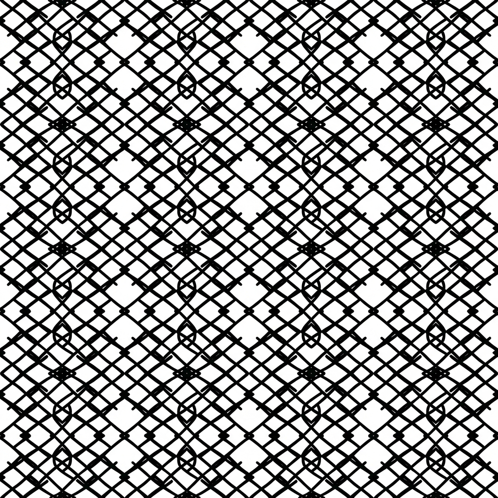

Made by hand
Embroidery has long been part of everyday textile culture. Skills and patterns were learned through practice, observation and the sharing of knowledge within families and communities.
Memory · Craft · Identity
Palestinian Tatreez is more than decoration. It is a textile tradition shaped by the hands, creativity and knowledge of generations of makers.
Through stitches, colours and regional styles, embroidered pieces carry memories of place and a connection to cultural identity.

A tradition in motion
Tatreez continues to evolve while remaining connected to the people and communities who keep the practice alive.
Embroidery has long been part of everyday textile culture. Skills and patterns were learned through practice, observation and the sharing of knowledge within families and communities.
Motifs, colours and garment details can vary between Palestinian regions. These visual differences help connect textile traditions to local identity and lived experience.
Today, makers continue to practise Tatreez on traditional garments and contemporary pieces, bringing inherited techniques into new contexts without losing their roots.
“Every thread is part of a story that deserves to be remembered.”
Palestinian Tatreez · A living tradition